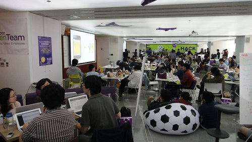

也紀念我們永遠的朋友 李士傑先生（Shih-Chieh Ilya Li）。
YA!hook - Yahoo Open Hack Day 2012 參賽經驗分享
睽違近 3 年的 Yahoo Open Hack Day，今年又再度開戰，今年一看訊息公布後，二話不說就立刻點了報名。這次直接揪同實驗室的同學、學弟參賽，除了比較熟習彼此開發模式，溝通成本也比較少。
在比賽前一天晚上，其實根本就沒有睡，在狀態很糟的情況下完成了報到手續，面對接下來 24 小時馬拉松式的作戰。

▲ 圖1 會場內的自由發揮塗鴉牆 (https://www.flickr.com/photos/myhsu/8113050151/in/photostream)，採用台灣創用 CC BY-ND 2.0 授權。
在第一天早上，如同往年， Yahoo! 內部有精采的技術議程分享，今年主打的是 Mojito，這是 NodeJS MVC Framework，開發者可以用 Javascript 流暢的打造網站服務，除了前後端程式語言一致，也有減少溝通成本等好處。也有遠道從美國來的工程師分享歷年 Open Hack Day 獲獎作品的特色，與評分的重點，讓我們能專注在這些點上開發程式。
我們開發專案叫 Ya!hook，是一個 Google Chrome extension，可以讓原本 Facebook 空乏的打卡頁面搖身一變，變得豐富實用。
一開始的想法是，在 Facebook 的打卡頁面上，對使用者有用的資訊寥寥無幾，我們就想結合 Yahoo! 生活+ 的資訊，自動在畫面上，補足哪些該出現的資料。像是鼎泰豐，就會秀出 Yahoo! 生活+ 上的店家資訊、食評、圖片、附近店家、同類型店家。另外我們也使用了台北市政府的停車資訊，直接把最近的停車場拉出來。 比較特別的是，如果打卡頁面是電影院的話，就直接拉了 Yahoo! 電影的時刻表，我自己覺得超級實用。
另外，我們也想在 Facebook 的活動頁面上，幫使用者加上活動當天天氣資訊，這塊的功能其實撰寫很快，把打卡頁面處理的架構，稍做修改就行了。
而專案中有使用到的 Yahoo! 的 API 或服務，分別是 Yahoo! Maps API, Yahoo! Weather API, Yahoo! 生活+ API (但其實有很多是我們想要但是 API 沒有提供到，我們就直接爬網站) 與 Yahoo! 電影的資料。
在程式的前端直接使用了 jQuery 解決，但後端程式我們不想碰觸流量、安全上面的議題，就直接選了 Google App Engine 為開發平台，用我們隊友都共同熟悉的 Python 來撰寫。
這次的比賽也嘗試了新的挑戰，是 Git 版本控制系統直接實戰 ，我自己對 Git 其實不太純熟，只簡單知道 push 與 pull 這類的基本指令，但這個比賽十分看重分工、協調、版本控管的細節，最後甚至都希望是直接在 repo 上看到 commit 的原始碼。幸好！我們這組的神手學弟，對 Git 指令簡直如數家珍，一首包辦 commit 與 merge branch 的教學工作，實戰磨練讓我是進步神速阿。
▲ 圖2 Ya!hook 擴充套件開場特效 (https://www.flickr.com/photos/bryanyuan2/8105870191/in/photostream)，採用台灣創用 CC BY-NC-SA 2.0 授權。
在我們約完成八成程式，發現這樣是沒辦法在短短 2 分鐘內，吸引到評審的目光，於是我們就想開始來些炫技了，過程中我們是了幾種開場特效，最後選定用類似拼圖的效果，把 Ya! 跟 hook 分別組合起來。
▲ 圖3 滿滿的零食，寫程式的一半不怕會餓到 (https://www.flickr.com/photos/myhsu/8113058083/in/photostream)，採用台灣創用 CC BY-ND 2.0 授權。
比賽過程中，無限供應的零食、飲料，是我對 Yahoo! 這家公司的第一印象，在工程師的福利真的沒話說。另外一點，留宿過夜的經驗真的很讚，明明是凌晨三、四點，當完正想倒頭就睡的時候，看到根本沒有參賽者有任何睡意，天啊，大家根本就拼了！在毫無意識的狀態下，撐到了早上，工作人員立刻緊接早操活動，也讓頭腦清醒了一點。
▲ 圖4 緊張的最後 DEMO 評選，參賽隊伍發表依序排成一列 (https://www.flickr.com/photos/myhsu/8113076706/in/photostream)，採用台灣創用 CC BY-ND 2.0 授權。
▲ 圖5 台下坐滿評審與發表隊伍 (https://www.flickr.com/photos/myhsu/8113046499/in/photostream)，採用台灣創用 CC BY-ND 2.0 授權。
最後的 DEMO 評審過程，大概是最難忘的參賽經驗了，評審找了創投界、學界、產業界的大咖人物，作為評審。工作人員嚴格執行了 2 分鐘的切畫面規範，後面倒數的計時讓人十分不安，提醒效果十足。參賽隊伍的報告者一次 6 位準備，依序切換畫面、計時。
觀摩別人的發表過程，也吸收經驗彌補自己的不足。讓我印象尤其深刻的「台灣中央政府預算－全民稽核系統」與「Search Bingo」根本就是神作，這些前端效果做得出神入化。
▲ 圖6 DEMO 發表時間，大家全神貫注在發表者的簡報上 (https://www.flickr.com/photos/myhsu/8113052915/in/photostream)，採用台灣創用 CC BY-ND 2.0 授權。
在最後，我們期待頂多勾上佳作就萬幸了，連得獎要說什麼都沒有準備好，在主持人宣布我們這組拿到台灣創意工場，「最佳投資價值獎」與「第二名」時，當下根本嚇傻了，我還打了暗號給認識的工作人員說「該怎麼辦」，整個連氣勢都沒了。
參與這類型的比賽，真的是難得經驗，一方面認識各地聚集的高手外，把自己的想法實作出來，跟同一領域的朋友一起分享，絕對是對工程師是很大的吸引力，這次參賽的作品可以參考 Yahoo hacktrackr。
- 作者簡介：https://tw.linkedin.com/in/bryanyuan2
- Yahoo hacktrackr: https://hacks.developer.yahoo.com/hack/yahoo-open-hack-taiwan-2012/yahook-039/event_5/hack_383
- Ya!hook Chrome Extension: https://tinyurl.com/8p7hmsa
- Github: https://github.com/bryanyuan2/YahooOpenHack2012
Special


Address：No.128, Sec.2, Academia Rd., Institute of Information Science, Academia Sinica, Nangang District, Taipei City 11529, Taiwan (R.O.C).
Privacy Policy. Terms-of-use